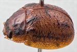
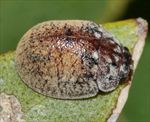
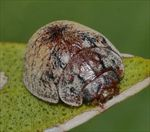
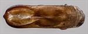
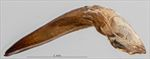
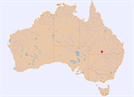

Click on images to enlarge


Male, Cunnamulla, Queensland


Male, Cunnamulla, Queensland


Male, Cunnamulla, Queensland


Aedeagus, dorsal view (Cunnamulla, Queensland)


Aedeagus, lateral view (Cunnamulla, Queensland)


Distribution
Name
Trachymela sp. Ta112
Reference specimen
2017-209, Cunnamulla, SW Queensland.
Adult Description
Length: ♂ 6.22 mm (n=1), ♀ 6.43 mm (n=1).
Colouration:
- Head: mid-brown with two large, black spots on frons, one on each side of centre line and directly behind fronto-clypeal suture, mandibles with black tips, labrum yellow-brown; antennomeres 1–5 straw-brown, 7–11 similar or grading fractionally darker with distal end of antennomere 11 even darker.
- Pronotum: brown, concolorous with head, with a black line on each side of discal area extending from close to anterior edge towards posterior edge, thinning towards and not quite reaching posterior edge, foveal area either completely black or with central black foveal peak and black areas extending along inside edge of foveal area roughly in shape of a “c” with its open side facing laterally.
- Scutellum: brown, concolorous with pronotum, outlined with a thin darker brown border.
- Elytra: brown, concolorous with pronotum, with a small, irregularly shaped black area centred on elytral summit and another black patch situated at anterior edge halfway between scutellum and humeral callus, small dark-brown and black dots and streaks are scattered around elytral surface, coincident with verrucae and short ridges, with a concentration of these along the discal margin where many of the dark areas are in the form of short transverse ridges, and in the posterior half of disc, where it takes the form of an interrupted dark band halfway between discal margin and suture, near the suture small elevated dark verrucae align into a longitudinal series, punctures are concolorous with interstices, humeral callus light brown.
- Venter & Legs: almost completely light- to mid-brown, including legs and abdomen, with only metathoracic ventrites, especially laterally, darker brown; inside surface of elytral epipleura brown.
- Cuticular Wax: grey and quite patchy over head and pronotum with densest coverage laterally, grey along marginal area of elytra and two small prominent concentrations of thick grey at anterior edge of each elytron, one adjacent to scutellum and the other just above humeral callus, most of elytral disc is covered in a relatively even layer of light brown, with verrucae and ridges clearly visible within.
Morphology:
- Shape: profile evenly rounded from scutellum to about 1/3 of distance from apex, where curvature increases slightly, height = 42–43% BL, greatest height viewed laterally is well in front of middle of elytral margin.
- Head: punctures moderately and somewhat unevenly sized (pd ≈ 1.5–3× ef). Antennae short (AL/BL: ♂ 39.4%, ♀ 33.8%), filiform.
- Pronotum: almost evenly curved transversely, foveal depression very shallow or absent with an almost round elevated area in middle, discal area somewhat rugulose, bounded laterally by slightly elevated (black) ridges at least anteriorly, a thin unpunctured ridge extends from anterior margin along centre towards but not quite reaching posterior margin, punctures clearly impressed and similar or fractionally larger than those on head, quite unevenly distributed or slightly acervate in anterior half of discal area, more densely and regularly distributed along posterior margin, some much finer punctures scattered among them, becoming coarser from foveal depression to lateral margins. Front margins join lateral margins in a smoothly rounded right-angle, with lateral margin curving smoothly and very gradually towards rear margin.
- Scutellum: punctured, punctures similar in size or fractionally smaller than those on adjacent area of pronotum but usually not as deeply impressed.
- Elytra: surface evenly curved transversely, punctures moderate to small and distinct and relatively evenly distributed on anterior half, many small smooth, elevated verrucae and short transverse ridges are scattered over elytral surface, elytral suture carinate in posterior third, flanked by two thin parallel ridges, sometimes partially interrupted, on each side, surface continuous under humeral callus; lateral margin either straight or angled upward in anterior section. Vertical extension of epipleura considerable (HCE/PW = 0.39–0.40).
- Venter: prosternal process narrowest anteriorly, closed anteriorly with sulcation in anterior 25% very weak, short setae sparsely distributed over prosternal process, absent from mesoventrite, a single seta on anterior and median trochanter; front edge of metaventrite beveled, rounded; inner edge of posterior of epipleura lacking setae.
Male Genitalia (Aedeagus):
- Dimensions: moderate-sized (LPE/BL = 37.9%).
- Dorsal view: shaft parallel-sided from basal sulcus to rear of ostium, then broadening very slightly towards a point in anterior half of ostium, from where sides converge towards apex in a smooth arc, dorsal surface with well-defined dorso-median channel and dorsolateral channels resulting in two long ostial processes protruding as far as spatula in the tear-shaped ostial depression; tip small and smoothly triangular.
- Lateral view: shaft curved sharply through about 45° near basal sulcus then ventral surface almost straight to apex, dorsal surface straight for less than half this distance, then converging evenly towards ventral surface, tip deflexed.
Immature Stages
Unknown.
Similar species
- Ta104: this species is very variable in the extent of dorsal dark colouring, but when dark colour is present, it tends to be in the same positions as in Ta112. However, the black maculae on the head tend to be small and further back on the frons, not touching the fronto-clypeal suture, and the humeral callus is black only rarely. The cuticular wax in Ta104 is of a uniform colour throughout. The central transverse ridge on the elytra of Ta104 is continuous and much better developed, whereas that in Ta112 is more of a fortuitous alignment of short transverse ridges. The two species have a very similar aedeagus, though that of Ta104 is slightly shorter and the 45° curve near the basal sulcus is more gradual.
Notes
- Host Associations: Ta112 has been collected from the box species Eucalyptus ochrophloia (subgenus Symphyomyrtus, section Adnataria) at a single location in south-western Queensland.
Copyright © 2026. All rights reserved.